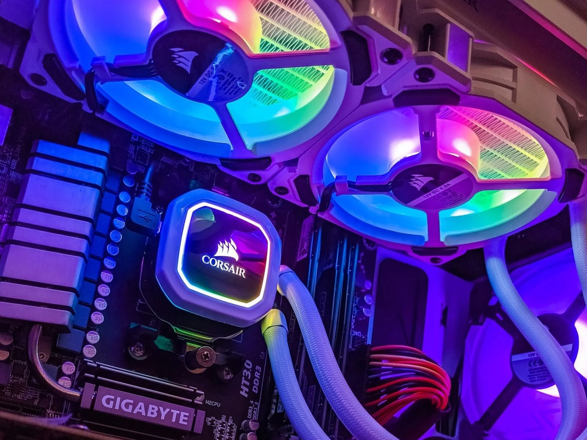
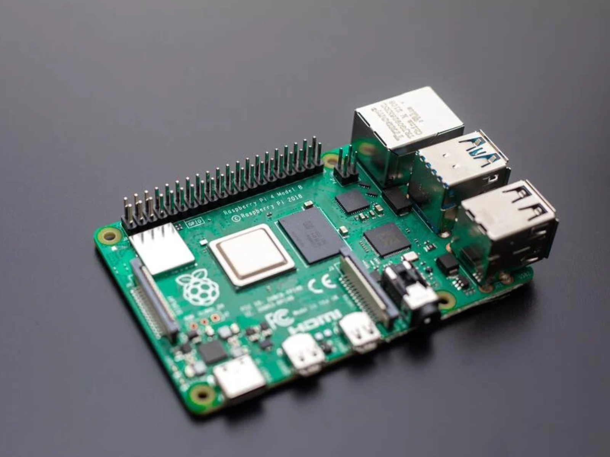
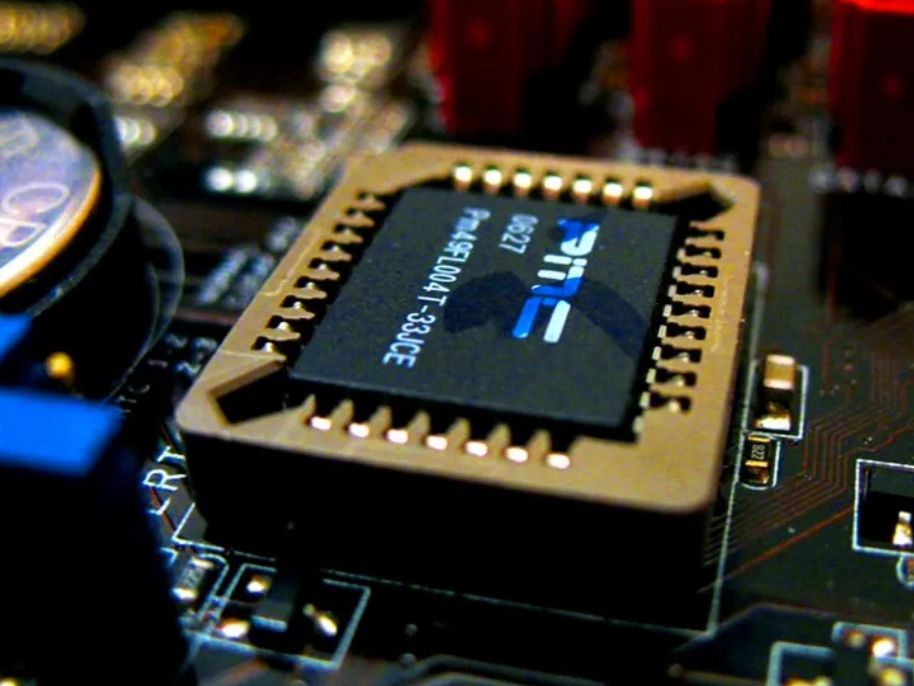

Disipador o Ventilador

¿Sabías que una buena ventilación puede alargar la vida útil de tu computadora? Pregunta más al chatbot.
Unidad de Estado Sólido
Los SSD actuales aceleran el arranque del sistema y la carga de programas. Consulta al chatbot sobre las ventajas.
Tarjeta de Red (Ethernet o Wi-Fi)
¿No tienes internet en tu PC? El chatbot puede ayudarte a revisar este componente.
BIOS/UEFI
Se encarga de iniciar los componentes básicos y cargar el sistema operativo. Explora con el chatbot.